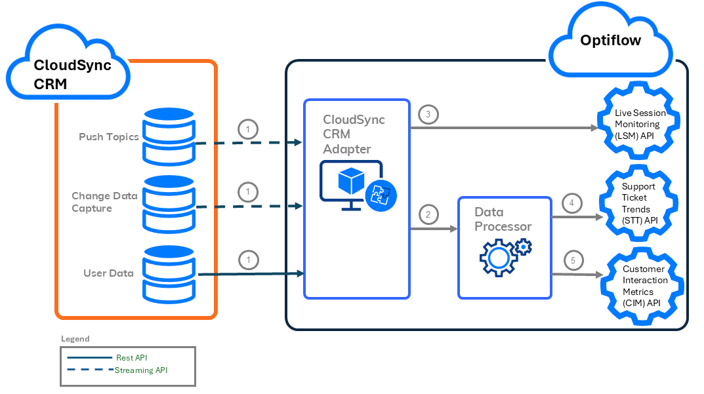

Optiflow CloudSync CRM Integration Guide¶
The Optiflow CloudSync CRM Integration Guide describes the system integration between the Optiflow system and the CloudSync CRM system.
Table of Contents¶
Introduction to the Optiflow-CloudSync CRM integration¶
In the Optiflow–CloudSync CRM integration, CloudSync supplies customer engagement, ticket data, and real-time visibility updates from the CloudSync CRM system to the Optiflow system.
Topics:
Overview¶
The Optiflow–CloudSync CRM integration uses a push method, where data is pushed to Optiflow by CloudSync. No data is sent from Optiflow back to CloudSync.
Within CloudSync, the objects from which data is pushed for the integration include:
- ChatSession
- SupportTicket
- VideoSession
- UserPresence
Optiflow also requests updates for mapping purposes to ensure usernames, statuses, and groups remain synchronized for ease of use and setup.
This integration supports users of the CloudSync Service Hub, utilizing Chat Sessions, Video Support, and Support Ticket channels. The real-time monitoring feed leverages CloudSync’s Omnichannel presence to display active sessions in Optiflow dashboards.
The Optiflow–CloudSync CRM integration uses the available CloudSync API suite and does not require installing any packages in your CloudSync environment. Some minor setup in CloudSync is required to provide authentication and populate the APIs with the required data.
Integration feeds¶
The three types of feeds available in the Optiflow–CloudSync CRM integration include:
- Customer Interaction Metrics (CIM): Provides details about customer engagement across channels.
- Support Ticket Trends (STT): Supplies historical data about ticket volumes and resolution times (used for forecasting and resource planning).
- Live Session Monitoring (LSM): Provides real-time visibility into active chat or video sessions (used for operational dashboards).
Configure adapters for feeds¶
Configure the relevant adapters in Optiflow to receive the feeds you want:
| CloudSync → Optiflow Feed | Optiflow Adapter | Purpose |
|---|---|---|
| Customer Interaction Metrics (CIM) | CIM Adapter | Historical interaction analytics |
| Support Ticket Trends (STT) | STT Adapter | Ticket volume and resolution insights |
| Live Session Monitoring (LSM) | LSM Adapter | Real-time session visibility |
Target audience¶
This guide is intended for technical users who want to integrate Optiflow with CloudSync CRM using the platform’s supported APIs, authentication workflows, and configuration tools.
Data retrieval flow¶
In the Optiflow–CloudSync CRM integration, CloudSync CRM pushes new events (Push Topics, Change Data Capture, or User Data) to the CloudSync CRM Adapter in the Optiflow system.
The CloudSync CRM Adapter:
-
Posts real-time data directly to the Live Session Monitoring (LSM) API.
-
Aggregates trend and analytical data through a Data Processor, which posts this data to the Support Ticket Trends (STT) API and the Customer Interaction Metrics (CIM) API.
The following diagram illustrates this data flow, and the accompanying table describes each numbered step.

| Step | Source | Destination | Description |
|---|---|---|---|
| 1 | Push Topics, Change Data Capture, and User Data | CloudSync CRM Adapter | CloudSync CRM pushes new events (Push Topics, Change Data Capture, and User Data) to the CloudSync CRM Adapter in the Optiflow system. The CloudSync CRM Adapter in Optiflow Cloud receives these events and checks to make sure all statuses, groups, and user IDs are recognized. If any IDs are not mapped, the adapter calls the required REST API to retrieve the correct mappings. |
| 2 | CloudSync CRM Adapter | Data Processor | The CloudSync CRM Adapter in Optiflow Cloud gathers events for the historical data and posts the data to the Data Processor for aggregation. |
| 3 | CloudSync CRM Adapter | Live Session Monitoring (LSM) API | The CloudSync CRM Adapter posts real-time session monitoring directly to the Live Session Monitoring (LSM) API, as the data is received. |
| 4 | Data Processor | Support Ticket Trends (STT) API | The Data Processor aggregates ticket trends in 15-minute intervals, and posts to the Support Ticket Trends (STT) API. |
| 5 | Data Processor | Customer Interaction Metrics (CIM) | The Data Processor aggregates interaction metrics in daily intervals, and posts to the Customer Interaction Metrics (CIM) API. |
Customer onboarding¶
The customer onboarding tasks for the Optiflow–CloudSync CRM integration are done by Optiflow and the customer.
Most of the setup for this integration is done by Optiflow. However, there are required setup tasks that the customer needs to do in CloudSync, including providing authentication for the API calls, and setting up the data that is pushed to the CloudSync CRM adapter in Optiflow. This includes, but is not limited to, the connected app, push topics, and change data capture setup.
The workflow includes the following steps:
| Step | Responsible | Name | Description |
|---|---|---|---|
| 1 | Optiflow | Internal Authentication | Optiflow sets up the internal cloud authentication tokens to ensure that the adapter can communicate with the Optiflow tenant. |
| 2 | Customer | Customer CloudSync CRM Setup | The customer sets up the access flow from their CloudSync tenant to the Optiflow adapter. In addition, they enable the push topics and change data captures required for the desired channels. |
| 3 | Optiflow | Deploy CloudSync CRM Adapter | Optiflow enables the adapter, and populates it with the required parameters to supply the data points required for the Optiflow tenant. |
Customer CloudSync CRM Setup¶
The customer administrator needs to set up the access flow from their CloudSync tenant to the Optiflow adapter.
Before you begin
Obtain a public certificate file named cloudsync.crt from an Optiflow engineer.
Workflow
| Seq.# | Step | Description |
|---|---|---|
| 1 | Enable change data capture | If you are processing the STT and CIM APIs, select the relevant CDC (Change Data Capture) entities for the integration, which can include:
|
| 2 | Create a new user and service account | Create a new user and associate the user with a service account, which is used by the integration to authenticate between CloudSync and Optiflow. |
| 3 | Create a permission set | Create a permission set to be used by the integration. The permission set includes permissions to allow CloudSync to push data to Optiflow. |
| 4 | Assign a permission set to a user | Once you create the permission set, assign it to the new user you created. |
| 5 | Create a connected app | Create the Integration Connected App, which is used to authenticate communication between CloudSync and Optiflow. It also provides security and limits related to the access of data in the integration. |
| 6 | Configure connected app policies | For the new Integration Connected App, configure system administration permissions and app policies. |
| 7 | Generate a consumer key | Generate the API access credentials from the Integration Connected App. |
| 8 | Validate the integration configurations | To validate that everything is configured correctly for the integration, use the Postman collection to ensure you receive a successful response. |
Enable change data capture¶
If you are processing STT and CIM APIs, select the relevant CDC (Change Data Capture) entities for the integration, which can include: SupportTicket, ChatSession, UserPresence, and VideoSession objects.
Before you begin
Log on to the CloudSync tenant application as an administrator.
Procedure
-
From the CloudSync tenant application, from the Setup icon, select Setup.
-
From the Quick Find text box, type: Change Data Capture.
-
Select Change Data Capture.
The Change Data Capture screen is displayed. In Available Entities, the system displays the CDC entities that are available to be selected for the change data capture service for the integration.
- From Available Entities, move the relevant CDC entities that are in scope for the integration to Selected Entities, which can include:
- SupportTicket
- ChatSession
- VideoSession
- UserPresence
Note: Only select the entities that are included in the integration. For example, if chats are not included, do not select ChatSession.
- Select Save.
The CDC entities that you selected are included in the integration.
What to do next?
Create a new user and service account
Create a new user and service account¶
Create a new user and associate the user with a service account, which is used by the integration to authenticate between CloudSync and Optiflow.
Before you begin
Procedure
-
From the CloudSync tenant application, from the Quick Find text box, type: Users.
-
From the All Users screen, select New User.
-
On the New User screen, complete the following mandatory fields for the user:
| Field | Description |
|---|---|
| Last Name | Last name of the user. |
| Alias | Shorter name representing the user. |
| User's valid email address, which is also used for verification in a later step. | |
| Username | Value that reflects the service account user for the integration. The username is shared with the Optiflow engineer at the end of the customer onboarding setup. |
| Nickname | Short name for the user or service account. |
-
Select Save.
-
Next to the Email field, select the Verify link to send a verification email to the user, and click OK.
The system sends an email to the user with a link to verify the account.
- From the Welcome to CloudSync! email, select Verify Account.
The system verifies the email account, and changes the Verify link next to the Email field to: Verified. The integration uses this user account to authenticate between CloudSync and Optiflow.
What to do next?
Create a permission set¶
Create a new permission set to be used by the integration. You can define specific attributes for the permission set, including the label, API name, and license.
Before you begin
Create a new user and service account
Procedure
-
From the CloudSync tenant application, from the Quick Find text box, type: Permission Sets.
-
From the Permission Sets screen, create a new permission set by selecting New.
-
On the Permission Set Create screen, complete the following mandatory fields:
| Field | Description |
|---|---|
| Label | Name of the permission set that displays in the tenant application. |
| API Name | Name of the permission set that is used for the API name. |
| License | CloudSync API Integration. |
- Select Save.
What to do next?
Assign a permission set to a user
Assign a permission set to a user¶
Once you create the permission set, assign it to a specific user.
Before you begin
Procedure
-
At the top of the Permission Set page, select Manage Assignments.
-
At the upper right of the Current Assignments page, select Add Assignment.
The system displays all users in a list.
-
In the search text box, enter the user you created in Create a new user and service account.
-
Select the check box next to the relevant user name, and select Next.
-
Set the expiration date for the assignment, and select Assign.
The system displays a confirmation message, stating that the assignments were successful.
- Select Done.
What to do next?
Create a connected app¶
Create the Integration Connected App, which is used to authenticate communication between CloudSync and Optiflow. It also provides security and limits related to the access of data in the integration.
Before you begin
Assign a permission set to a user
Procedure
-
From the Quick Find text box, type: App Manager.
-
Select New Connected App.
-
Select Create a Connected App, and select Continue.
-
On the New Connected App screen, under Basic Information, complete the following mandatory fields:
-
Connected App Name
-
API Name
-
Contact Email (must be a valid email address)
-
From API (Enable OAuth Settings), select Enable OAuth Settings.
-
In Callback URL, enter a dummy URL, such as: https://dummy.com.
-
Select Use digital signatures.
-
To upload the certificate provided by Optiflow, select Choose File, and browse and select the file, cloudsync.crt provided by an Optiflow engineer.
-
Add the following Available OAuth Scopes to Selected OAuth Scopes:
-
Manage user data via APIs (api)
-
Perform requests at any time (refresh_token, offline_access)
-
-
Verify the following are selected:
-
Require Proof Key for Code Exchange (PKCE) Extension for Supported Authorization Flows
-
Require Secret for Web Server Flow
-
Require Secret for Refresh Token Flow
-
Enable Client Credentials Flow
-
-
Select Save, and then Continue.
What to do next?
Configure connected app policies
Configure connected app policies¶
For the new Integration Connected App, configure system administration permissions and app policies.
Before you begin
Procedure
-
From the connected app, select Manage.
-
Select Edit Policies.
-
In OAuth Policies, from Permitted Users, select Admin approved users are pre-authorized.
-
In Client Credentials Flow, in the Run As field, browse, and select the user you created for the integration.
The Client Credentials Flow defines the permissions used in the system-to-system communication. These permissions are defined for the user in the integration.
-
Select Save.
-
In Profiles, select Manage Profiles.
-
From the list of user profiles, select Minimum Access - API Only Integration, and select Save.
What to do next?
Generate a consumer key¶
Generate the API access credentials from the Integration Connected App.
Before you begin
Configure connected app policies
Procedure
-
From the Setup view, select App Manager.
-
From the app list, find the Integration Connected App.
-
From the drop-down menu, select View.
-
In API (Enable OAuth Settings), select Manage Consumer Details.
-
At the Verify Your Identity prompt, type the verification code sent to the verification email address, and select Verify.
-
For the Consumer Key, select Copy.
What to do next?
Validate the integration configurations
Validate the integration configurations¶
To validate that everything is configured correctly for the integration, use the Postman collection to ensure you receive a successful response.
Before you begin
Procedure
- Open your Postman collection.
If you are working with a CloudSync sandbox instance, make sure to use the following endpoint: https://test.cloudsync.com/services/oauth2/token (instead of the production endpoint: https://login.cloudsync.com/services/oauth2/token).
-
On the Variables tab, update the following key-value pairs with your credentials:
-
grant_type: urn:ietf:params:oauth:grant-type:jwt-bearer
-
userID:
-
consumerKey:
-
cloudsyncTokenEndpoint:
-
Select Send.
If the configuration was defined correctly, the system displays a success response (200) when executing the Postman request.
- Upon receiving a success response (200), share the results with Optiflow for the CloudSync integration.